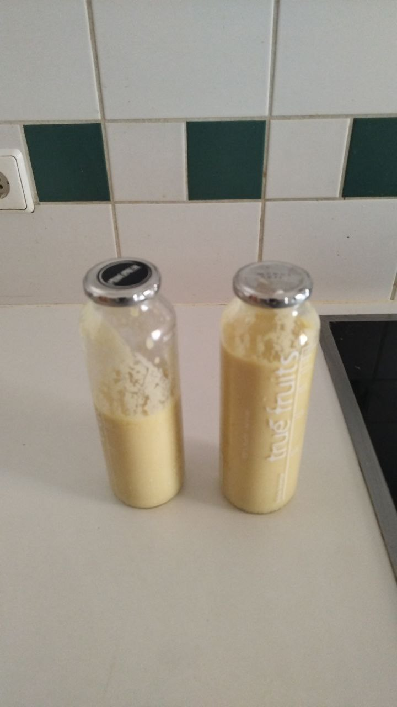

All Recipes
Tags
Mango Lassi
Ingredients
200g fresh mango
250g yoghurt
80ml milk
3 Tbsp honey or sugar
1 tsp ground cardamom (optional)
Steps
Combine yoghurt, milk and mango in a blender and blend until smooth
Top with caramom and serve
Tags
Indian,
Vegetarian
,
Drink
